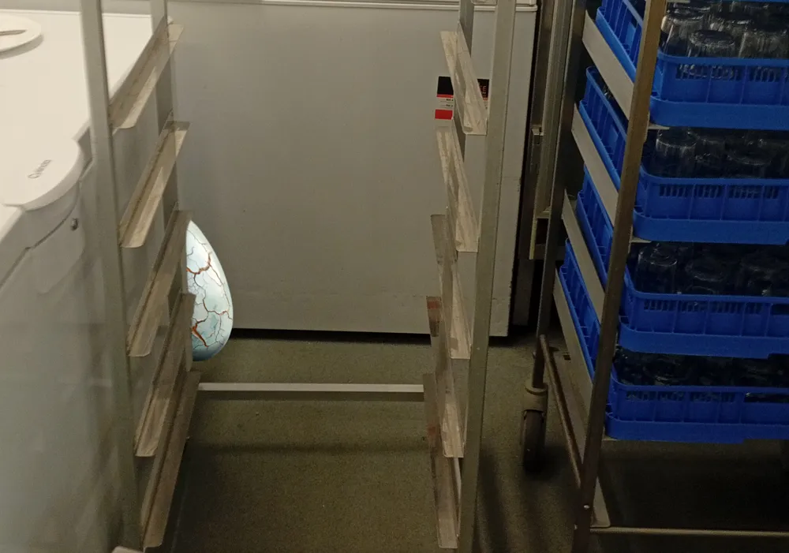

Östra gymnasiet

Folkhälsomyndigheten: "Förhistoriskt ägg i köket"
Förra veckan kom Folkhälsomyndigheten på sitt årliga besök för att inspektera Östras kök. Då gjordes en oväntad upptäckt: ett förhistoriskt ägg! Ägget, daterat till den äldre kritaperioden, låg gömd bakom en frysbox. "Synnerligen märkvärdigt", sa Gösta Rötkepsni, inspektör på Folkhälsomyndigheten. Upptäckten har fått stor uppmärksamhet inom paleontologin. Forskare på Karolinska Universitetssjukhuset har tagit in ägget för analys men har ännu inte kunnat identifiera vilken art ägget tillhör. Eftersom ägget utstrålade "Tjernobyl-liknande" mängder radioaktivitet var köket tvunget att stängas ner tillfälligt - något som möttes med stark kritik bland eleverna.
"Jag vill ha mitt jävla vita ris", sade en arg elev. "Vad spelar lite radioaktivitet för roll?" Köket förväntas öppna igen till torsdag. Löken har sökt en kommentar från skolledningen men har inte fått svar.